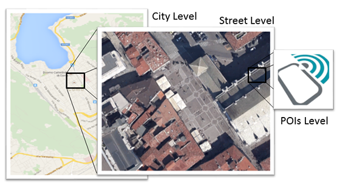
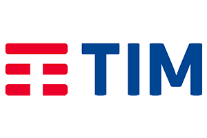

TIM (Telecom Italia) is the largest telecommunications company in Italy. It leads the project from Trento and contributes with territorial big data provisioning & analytics, and with services for the “smart” interaction between people and their surrounding environment.
Keep an eye on your city
CrowdInsights is a digital solution that actively monitors urban environments detecting the composition, dynamics and motivations of crowds.
It provides data analytics and actionable insights to support decision-making and planning among administrations and businesses.
Key Features
COMPETITIVE ADVANTAGES
CrowdInsights provides comprehensive & cross-sourced data: it integrates data collected from IoT sensors, mobile phones and social media to generate in-depth, multi-scale views on urban dynamics. Its solutions include both real-time & post-hoc results.
CrowdInsights offers data analytics and actionable insights to public administrators (urban planners, security officers), tourist and culture offices and agencies, events managers, commerce districts.

MULTI-SCALE PERSPECTIVE
CrowdInsights supplies perspectives of city dynamics at different levels based on several types of data.
CITY LEVEL: people presences in the city and their demographics and provenience using Mobile Telco Data. STREET LEVEL: people counting & trajectories using commercial, privacy-preserving IoT sensors distinguishing people and directions. CITIZEN LEVEL: provides insights on how and why people populate the city from Social Media and personal Apps.
TARGET MARKETS
CrowdInsights addresses 3 main different scenarios. DATA-DRIVEN PUBLIC ADMINISTRATION: pre-decision support & before-after comparison, help with prioritizing decisions and validating & measuring the impact of people's flows. EVENT MANAGEMENT & EVALUATION: feedback & validation of choices and critical aspects (safety) of different initiatives in the city. TERRITORIAL MARKETING: more effective, predictive & targeted marketing, adapted according to events and tourism.
Our Solution
CrowdInsights provides decision makers with reliable predictions and actionable insights on the composition, dynamics, and intentions of crowds in the urban environment. Understanding people’s behavior is crucial when, for example, a city manager has to decide opening times of a pedestrian area, or when commerce districts want to deliver effective marketing campaigns. CrowdInsights makes available, in a privacy-preserving way, the pervasiveness and velocity of modern data-driven technologies in order to dynamically and continuously support urban stakeholders in understanding their city.
Urban Data Science Bootcamp
A professional school crash-course on how the science of urban data can be applied to solve metropolitan issues
The CrowdInsights professional school provides a no-frills, hands-on introduction to the science of urban data; from data creation, to data analysis, data visualization and sense-making, the bootcamp introduces more than 10 real-world application uses cases that exemplify how urban data can be applied to solve metropolitan issues.
Attendees explore the challenges and opportunities that come from the adoption of novel types of urban data sources, including social media, mobile phone data, IoT networks, etc.
WHY?
Data is the catalyst needed to make the smart city vision a reality in a transparent and evidence-based (i.e. data-driven) manner. The knowledge required for data-driven urban analysis is essential for urban stakeholders, and is diverse and quickly evolving.
FOR WHOM?
Everyone interested in leveraging urban data to improve cities. We encourage the participation of Civil servants, Professionals, Students, Urban planners, and managers of city utilities and services. No previous experience in data science or computer science is required.
WHEN?
The professional school has been delivered in two editions:
Milan
November 8-9, 2017 (in Italian)
Amsterdam
November 30-December 1, 2017 (in English)
You can read a brief recap here. For more info, contact
Italian edition
Marco Brambilla (marco.brambilla@polimi.it)
Download the brochure
Dutch edition
Alessandro Bozzon (a.bozzon@tudelft.nl)
Download the brochure
Industrial Partners
-

-
Fluxedo is an Italian hi-tech startup operating within the scientific park ComoNext, with the support of the PoliHub incubator. Fluxedo brings to CrowdInsights its expertise in IoT deployments, real-time data streaming and management, social-media analysis.
-
KPN is a Dutch landline & mobile telco. KPN makes available to the project its LoRa network and hundreds of compatible sensors, which allow the monitoring of location, motion of people in the city and the collection and storage of environmental properties.
Research Partners
-

Fondazione Bruno Kessler (FBK) is a private non‐profit research center working for the public interest. The i3 Intelligent Interfaces and Interaction group of FBK contributes by focusing on user-centric design and on the facilitation of human-computer interaction, to make our solution more effective for the customers.

Politecnico di Milano is ranked as one of the most outstanding European universities in Engineering, Architecture and Industrial Design. Within CrowdInsights, the Data Science team (DEIB) will bring expertise in real-time and post-hoc Big Data Analytics and supporting the development of digital solutions.

Supporters
CrowdInsights is an Innovation Activity supported by EIT Digital,
a KIC of the EIT, a body of the European Union.
Contact us
Are you a tourism agent, event manager or commercial stakeholder who would like to better organize and target your business based on city’s insights?
Then get in touch with us!
- E-mail: info@fluxedo.com
- Phone: +39 333 7192500